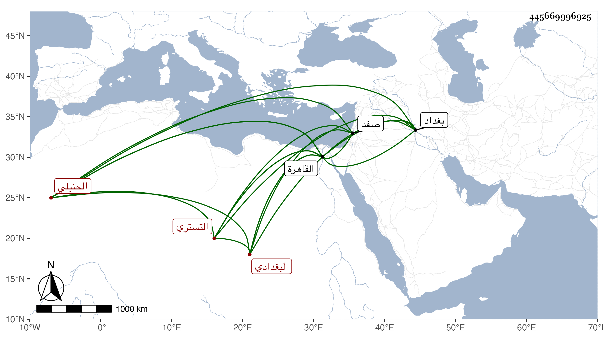

0902Sakhawi.DawLamic.ITO20230111-ara1.EIS1600.445669996925
Biography ID: 445669996925
409
عبد الرحمن بن نصر الله بن أحمد بن محمد بن عمر نور الدين بن الجلال التستري الأصل البغدادي الحنبلي نزيل القاهرة وأخو المحب أحمد الماضي وذاك الأكبر ويعرف بابن نصر الله . ولد في جمادى الثانية سنة إحدى وسبعين وسبعمائة ببغداد ونشأ بها فأخذ عن أبيه وأخيه وغيرهما ، وانتقل إلى القاهرة مع أبيه وهو أصغر بنيه وسمع بها على المجد إسماعيل الحنفي جامع الترمذي وسنن النسائي وعلى ابن حاتم الشفا وعلى التنوخي وغيرهم ، وأجاز له ابن المحب وجماعة في استدعاء بخط أخيه ، وتكسب أولا بالحرير ونحوه في حانوت على باب القصر ثم بالشهادة ثم ترقى حتى ناب في القضاء عن ابن المغلي ثم أخيه بل ولي قضاء صفد استقلالا فأقام بها سبع سنين ثم عزل واستمر على النيابة عن أخيه بعد أن حج وجاور حتى مات وذلك في يوم الجمعة تاسع شعبان سنة أربعين وقد أثكل ثلاثة عشر ولدا ولم يخلف أحدا ، وكانت جنازته حافلة ويقال إنه لم يكن محمودا في قضائه لكنه كان فهما ظريفا حسن المودة كثير البشاشة يستحضر الكثير من الفقه وهو ممن أورده شيخنا في تاريخه عفا الله عنه .
